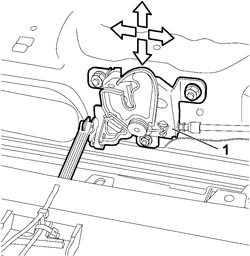
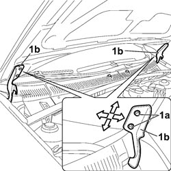
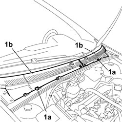
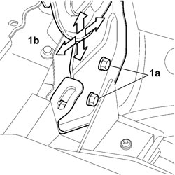

7025A10 BONNET LID - ALIGNMENT
- Path
- Procedures > 70 FITTINGS > 7025 COMPARTMENT COVERS > 7025A BONNET LID > 7025A10 BONNET LID - ALIGNMENT
- Kind
- repair procedure (removal / refitting; the operation number is the code)
- Applies to
- all engines; all production periods
- Interactive page
- https://sloeber94.github.io/elrnDB-fCrm/en/#/194000956
Applies to: all engines; all production periods
Lift the bonnet and support it.
Carry out the operations described below to adjust the bonnet lid in a vertical direction:
Check and, if necessary, alter the height of the buffers.
1. Loosen the bolts fixing the bonnet lock.

Applies to: all engines; all production periods
Proceed with adjusting the position of the bonnet, making use of the slotted openings for the bolts fixing the bonnet lock and hinges.
When the adjustment is completed, tighten the bolts fixing the bonnet lock and hinges to torque.
Component | Fastening | dia | Value (daNm) | Validity |
|---|---|---|---|---|
MOVING HINGES ON BONNET | Bolt | M8 | 0,96 ÷ 1,44 |

Applies to: all engines; all production periods
If the adjustments indicated in the previous points are insufficient, adjust the position of the bonnet hinges as described below.
1. Using the special tool, release the fixing buttons (1a) and remove the covers (1b) for the windscreen base trim.
Tool | Description | Function | Validity |
|---|---|---|---|
1878077000 | Knife | Retainer removal |

Applies to: all engines; all production periods
Op. 7210E22 R.R. WINDSCREEN BASE TRIM
1. Loosen the fixing bolts (1a) and adjust the position of the bonnet hinges (1b) until the alignment is correct.
When the adjustment is completed, tighten the bolts fixing the bonnet hinges to the side panel.
Component | Fastening | dia | Value (daNm) | Validity |
|---|---|---|---|---|
WING TO LIGHT CLUSTER BASE MOUNTING BRACKET | Bolt | M8 | 6,4 ÷ 9,6 |

Applies to: all engines; all production periods
Repaint the area of the hinges.
Op. 7210E22 R.R. WINDSCREEN BASE TRIM
Position the covers for the windscreen base trim and fit the securing buttons.